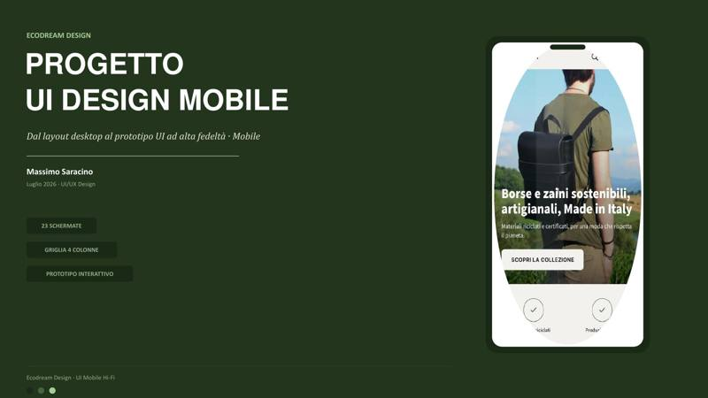
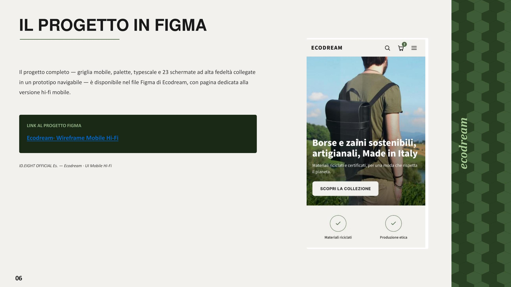

Il progetto
Con il 77,3% degli utenti che naviga principalmente da mobile, la trasposizione ad alta fedeltà dell'interfaccia su smartphone era un passaggio necessario per completare il progetto Ecodream Design.
Ho adattato le 24 schermate desktop a una griglia mobile a 4 colonne, per un totale di 23 schermate coerenti con il design system già definito: stessi colori, stessa tipografia, stesso linguaggio visivo, ma ripensati per un'interazione touch.
Anche in questo caso il prototipo è navigabile su Figma, con un wireflow dedicato alle microinterazioni mobile, per verificare che l'esperienza resti fluida e coerente su ogni dispositivo.

Uno sguardo al dettaglio
La home mobile: stesso messaggio e stessi badge di fiducia della versione desktop (materiali riciclati, produzione etica), adattati a una griglia a 4 colonne pensata per lo smartphone.